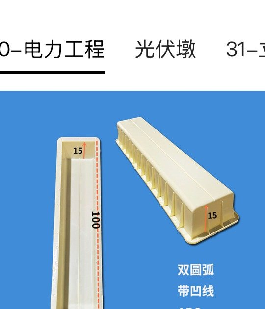
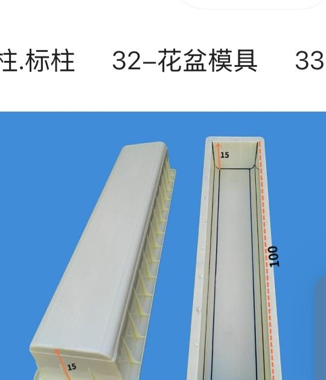
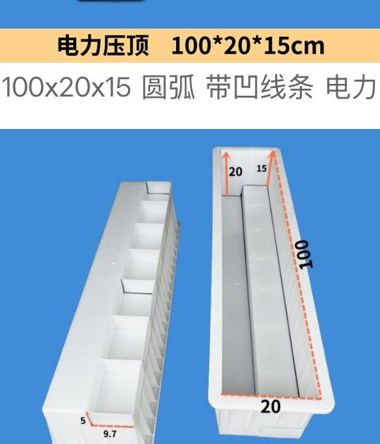
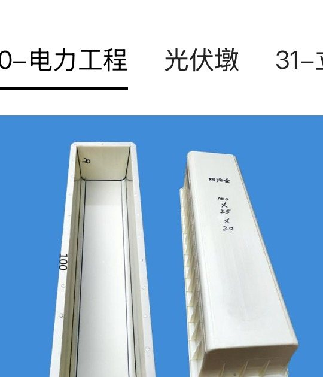

Representative Photovoltaic Pier Moulds
Six selected photovoltaic pier examples from the latest screenshots. More support-base profiles can be reviewed from drawings.

Solar Pier Mould
光伏墩 · about 100 × 20 × 15 cm

Solid Photovoltaic Pier Mould
实心光伏墩 · about 100 × 20 × 15 cm

Grooved Solar Pier Mould
电力压顶 / 光伏墩 · about 100 × 20 × 15 cm

Double-Slot Photovoltaic Pier Mould
双线槽光伏墩 · about 100 × 25 × 20 cm

Dual-Cable Solar Foundation Pier Mould
双线槽电力压顶 / PV base component
U-Type Photovoltaic Support Pier Mould
光伏支墩 · U-type support base